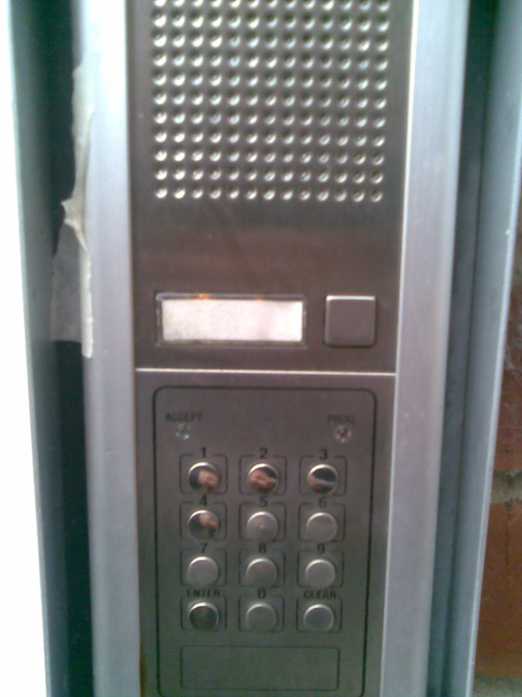
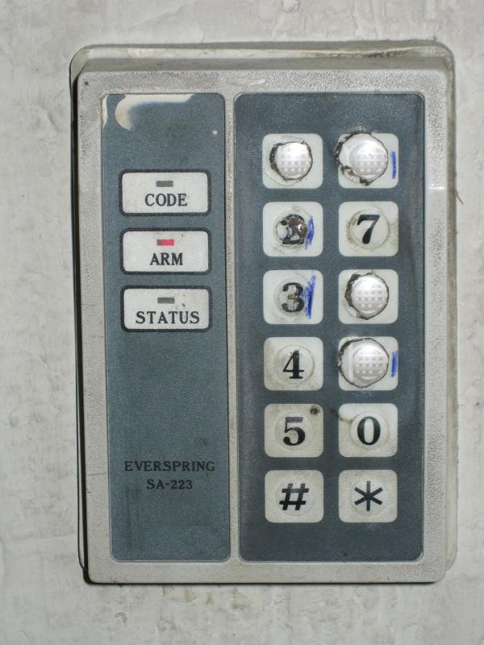

Math: Ruining Everything Since Forever
Christopher Swenson
Confoo ca, Montreal 2017
What is this talk?
Math!
Who is this talk for?
Curious people who love math.
Who am I?
Christopher Swenson, Ph.D.
Currently at Twilio, previously Google, US Government, Simple, Capital One.
I love math.
What are we talking about?
Weird math and computer math.
- Rounding
- Bits
- Addition
- Multiplication
- IEEE 754
- Fast Fourier Transforms
- Fun stories
Math libraries
$ python2.7
Python 2.7.13 (default, Dec 18 2016, 07:03:39)
[GCC 4.2.1 Compatible Apple LLVM 8.0.0 (clang-800.0.42.1)] on darwin
Type "help", "copyright", "credits" or "license" for more information.
>>> round(1.5)
2.0
>>> round(3.5)
4.0
>>> round(2.5)
3.0
$ python3
Python 3.6.0 (default, Dec 24 2016, 08:01:42)
[GCC 4.2.1 Compatible Apple LLVM 8.0.0 (clang-800.0.42.1)] on darwin
Type "help", "copyright", "credits" or "license" for more information.
>>> round(1.5)
2
>>> round(3.5)
4
>>> round(2.5)
2
Why?
Banker's rounding.
There are a lot of ways to round numbers.
We want to round in unbiased way.
import random
def pick_num():
r = random.random()
num = random.randint(0, 10000) / 100.0
if r < 0.1:
return -num
return num
l = list(pick_num() for _ in range(100000))
original_sum = sum(l)
rounded_sum = sum(round(x) for x in l)
bias = (rounded_sum - original_sum) / float(len(l))
print(bias)
$ python2.7 bias.py 0.00589979999998 $ python3 bias.py 0.00030580000018431974
pow()
Most math libraries have Math.pow.
Be very careful with it with large powers.
If you are doing modular exponentiation, use a different function
- Python
pow - Java
BigInteger.modPow.
Random
We could have a whole talk on random numbers
Also something easy to get wrong
Cryptographically safe: Slow
"Normal": fast, good for non-security usage
Good non-crypto: Mersenne Twister (Excel, PHP, Python, Ruby)
Addition
$x + 1 > x$, right?
$x - 1 < x$, right?
$ v8 V8 version 5.1.281.47 [sample shell] > 9007199254740992 + 1 9007199254740992 > -9007199254740992 - 1 -9007199254740992
$-x \not= x$ (except $x=0$), right?
$ scala Welcome to Scala 2.12.1 (Java HotSpot(TM) 64-Bit Server VM, Java 1.8.0_92). Type in expressions for evaluation. Or try :help. scala> val x = -2147483648 x: Int = -2147483648 scala> -x res0: Int = -2147483648
Adding numbers will never crash my machine, right?
def f():
a0 = 0
a1 = 1
# ...
a0 + a1 + # ...
In Python, it can with about 87,317 variables...
IEEE 754 Floating-Point Numbers
The beautiful and terrible standard.
double, 64 bits, 53 bits of precision

{kind=link}
- Can use integer comparison
- Has weird things like
-0.0 - For very tiny values (subnormal, denormal), there are security risks
- Ruby (CVE-2013-4164): parsing floating-point could overflow the heap
Story: Inverse square root
float Q_rsqrt(float number) {
float x2 = number * 0.5F;
float y = number;
long i = * ( long * ) &y; // evil floating point bit level hacking
i = 0x5f3759df - ( i >> 1 ); // wtf?
y = * ( float * ) &i;
y = y * ( 1.5F - ( x2 * y * y ) ); // 1st iteration
return y;
}
This is why good comments, variable naming, and breaking things down into functions are important.
Birthday Paradox
There are 366 birthdays. How many people do you need in a room before two have the same birthday?
About 23
Birthday Paradox Demo
Elements:
Probability of collision by now:
This has lots of implications, but in general:
If there are $N$ choices of something picked uniformly at random, then it will take $\approx \sqrt{N}$ picks when you get a repeat with 50% probability.
This is the basis for SHA-1 collisions in the news
$160$-bit hash means $2^{160}$ possible hashes
$\quad\Rightarrow$ means $\approx 2^{80}$ needed to find a random collision
Can do better by taking advantage of weaknesses
Still can't find a parituclar collision, i.e., a pre-image
Benford's Law
More numbers start with 1 than 2, 2 than 3, ..., and 9 is the loneliest number of all.
 Axiom of Choice
If you have an ordered, infinite number of sets $S_i$, you can create a sequence $x_i$ of elements each from $S_i$.
Banach–Tarski Paradox
You can cut a sphere (volume 1) into 5 pieces, rearrange them, and get 2 spheres of volume 1.
Follows from Axiom of Choice
Multiplication
Boring, I know right.
But what if I told you... we've only found fast ways to do it since the 1960s.

1 2 × 3 4 -----
1 8
3 6
----- 3 7 8
4 × 1 +
a b × c d -----------
a×d b×d
a×c b×c
----------- a×c (a×d + b×c) b×d
4 × 1 +
Can apply to large numbers recursively
Gives you $O(N^2)$ smaller multiplications
(Addition is always $O(N)$.)
Karatsuba found in 1960 that we can do it with only 3 smaller multiplies.
$(a\times c)$, $(a\times d) + (b\times c)$, $(b\times d)$
$(a\times c)$
$(b\times d)$
$(a + b)\times(c + d) - (a\times c) - (b \times d)$
3 × 4 +/-
Toom–Cook: split into 3+ parts, and do, e.g., 5 multiplications instead of 9.
Schönage–Strassen: FFTs; $O(N\ \text{log}\,N\ \text{log}\,\text{log} \,N)$.
Matrix Multiplication
We've only found fast ways to do it since the 1960s.
Naïvely, $O(N^3)$ multiplications
Strassen: similar to trick before gets $O(N^{2.8074}$) (1969)
... down to $O(N^{2.3728639})$ multiplications (2014)
... possibly $O(N^2)$ is the lower bound?
Discrete Fourier Transform
Any time-series of numbers (e.g., color, sound samples) can be converted into a set of frequencies (i.e., sin and cosine functions).
You are already familiar with this
(Photo by Javier Morales)
The key is that there is an efficient way to do this, called the Fast Fourier Transform. And it is magic.
FFT Computation
FFT-$n$: split it into two FFTs of size $n/2$:
One: $y = \text{FFT}_{\frac{n}{2}}(x_0, x_2, \dots)$
The other: $z = \text{FFT}_{\frac{n}{2}}(x_1, x_3, \dots)$
"Butterfly" them together
(note: $\omega^{\frac{n}{2}} = -1$)
$\quad x_{i\phantom{+\frac{n}{2}}}' = y_i + \omega^i z_i$
$\quad x_{i+\frac{n}{2}}' = y_i - \omega^i z_i$
Why is this important?
Compression.
Images and sound require lots of raw data
Human eyes, ears bad at discerning fine details
So throw some of this data away!
This is how JPEG, MP3 work.
Keep the lower frequency "parts"
Sound
function wave(duration, frequency, height) {
var pcm = [];
for (var i = 0; i < duration * hz; i++) {
var t = i / hz;
pcm[i] = height * Math.sin(2 * Math.PI * t * frequency);
}
return pcm;
}
Simple Hz wave
new Audio(makeAudioFile(wave(1.0, 500.0, 0.1))).play()Freq plot:
Hz wave
Hz wave
Freq plot:
Freq plot:
Last note: I am also a bad video game devleoper
But luckily, I kinda know math!
I have no idea how other people make video games, or say, sound in them, so I just make it up:
- Generate raw samples at 48,000 Hz
- Convert to 16-bit PCM
- Add a WAV file header
- Base64 encode
- Play as a data URL
- ... compose in JS console!